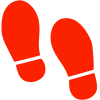

OVERVIEW
This project was completed as a capstone senior design project at The George Washington University, winning second place and awarded for being the "most marketable project" at the GW Pelton Award Competition in 2015.
The goal of Techtiles was to provide users the option of a more comprehensive system for tracking their biometrics through a mobile app. We also wanted to introduce wearable technology that can be completely washable without having to remove all the electronics. We envisioned this device being useful in a variety of applications including firefighting, space travel, and athletics. Techtiles uses three sensors to gather all of its data: an accelerometer, electrocardiogram (ECG), and a stretch sensor. With these, the device can extract useful information like heart rate, breathing rate, steps taken, distance traveled, and energy expended.
The project was divided into three main categories: Hardware, Data Processing, and App Development.
Sensors Used
 |
||
| Accelerometer | ECG | Fabric Stretch Sensor |
Extracted Data
|  |  |
 |
||
| Heart Rate | Breathing Rate | Steps | Distance | Energy Expended |
HARDWARE & DESIGN
The Hardware subsystem included choosing the fabric for the shirt ()as well as any stitching), designing the analog filters used for the ECG and breathing sensor, building a custom circuit board, and designing a housing for the non-washable electronic components. The final design for the device is the sleeveless, moisture wicking compression shirt shown below with its electronic housing attachment.

(Top) Compression shirt with respiration sensors and ECG electrodes. (Bottom) Final PCB with Arduino Due and Bluetooth shield connected, placed inside 3D printed housing.
The shirt is equipped with two bands of silver coated nylon along the left and right sides of the torso which serve as stretch resistors that measure breathing. This special conductive fabric is washable and stretchable in all directions, making it an excellent choice for the sensor design. A low pass filter was designed to only allow the lower frequencies associated with breathing to pass through.
The ECG used a basic 2-lead configuration and a ground. Anything more complex, although more accurate, reduced the durability of the device and also provided more information that was needed for this project. The same fabric used for the respiration sensor was used for the ECG electrodes as well, which were made up of three square pieces stitched underneath the shirt.
Movement was detected using a 3-axis accelerometer. With this data, a program was written to detect peaks of increased g force, indicating a step. By counting these steps as well as their frequency, distance traveled and energy expended could be calculated in real time as well.
The brain that connected all the components together was the Arduino Pro Mini (seen above). It was chosen for its relatively low power consumption (3.3V) and the availability of analog and digital pins.
DATA PROCESSING
Before measuring any real data, an initial calibration phase is run to fine tune any parameters specific to the user such as gait, height, weight, and respiration volume. Once calibration is complete, the Arduino runs averaging and smoothing filters on the incoming data to clean it up more. Since heart rate, steps, and breathing are counted by observing maximum values of a rhythmic data set, this cleaned data is examined for any sharp peaks in the waveform. From here, heart and respiration rate is found by simply dividing the number of peaks counted by the elapsed time. Furthermore, distance is determined by multiplying the number of steps counted by the user's gait, and energy expended is calculated by using the user's weight and their speed (determined by dividing the distance traveled by the elapsed time).

Sample data for respiration. As the user breathes in, the resitance of the sensor changes, resulting in the waveform above. The observed peaks were used in determining repiration rate.
MOBILE DISPLAY
To view the data, a user-friendly Android app was devloped to recieve output biometrics from the shirt via Bluetooth. Using the “android.Bluetooth” API in Android Studio, pairing with the shirt is immediately initiated once the app is opened.